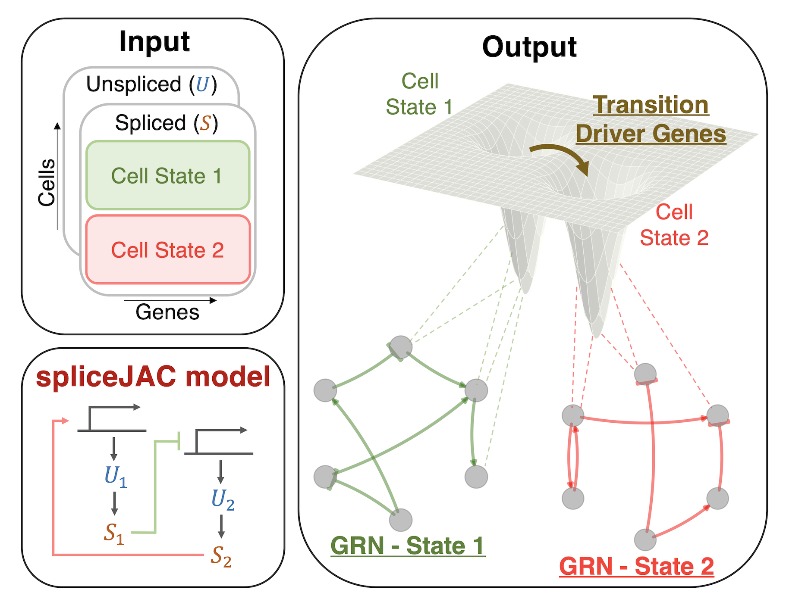

spliceJAC: Identify transition driver genes and cell state specific regulatory interactions from single-cell transcriptome data¶
spliceJAC is a python-based toolkit to reconstruct cell state-specific gene regulatory networks (GRN) and predict transition driver genes leading to cell differentiation.
Overview of spliceJAC¶
spliceJAC requires the spliced (S) and unspliced (U) count matrices from single cell RNA-sequencing (scRNA-seq) experiment as well as cell annotations that are used to identify the cell states in the dataset. Starting from this information, spliceJAC builds a local mRNA splicing model that provides information about cell state specific gene regulatory interactions and driver genes that induce cell state transitions.

Applications¶
Application of spliceJAC include:
Investigate the context-specific signaling role of genes in different cell states.
Analyze multi-stable systems where several cell states can coexist.
Distinguish the transition driver genes leading to distinct differentiation paths stemming from a common initial state.
Use and installation¶
Install the package from PyPl¶
spliceJAC can be installed using pip:
pip install -U splicejac
Working within the spliceJAC repository¶
Alternatively, you can zip download the spliceJAC repository from the green ‘Code’ bottom at the top right corner of this page and run your custom code and notebooks from within the repository.
Setting up a virtual environment¶
Whether you decide to install the package or to work within the spliceJAC Repo, we suggest to work within a virtual environment to avoid conflict and ensure that all dependencies are updated to the required version. Guidelines to create a virtual environment in Python can be found here.
spliceJAC requires the installation of dependencies including Numpy, Matplotlib, Pandas, Scanpy and scVelo. The full list of required packages can be found in the requirements.txt file within this folder. Once your virtual environment is set up, you can install all required dependencies by running:
pip install -r requirements.txt
Getting started¶
This repository includes two in-depth notebook tutorials to demonstrate spliceJAC’s applications in inferring cell state specific gene regulatory networks and analyze cell state transitions:
GRN inference
Transitions
References¶
Federico Bocci, Peijie Zhou, Qing Nie, spliceJAC: Identify transition driver genes and cell state specific regulatory interactions from single-cell transcriptome data, Preprint (2022).
The detailed testing and benchmarking of spliceJAC is publicly available here.
Further reading¶
Bergen et al. (2020), Generalizing RNA velocity to transient cell states through dynamical modeling, Nature Biotechnology.
Pratapa et al. (2020), Benchmarking algorithms for gene regulatory network inference from single cell transcriptomic data, Nature Methods.
Wolf et al. (2018), SCANPY: large-scale single-cell gene expression data analysis, Genome Biology.
Contact and support¶
Questions or suggestions are welcomed and highly appreciated. You can contact us by opening an issue or via email at fbocci@uci.edu.
Warning
This library is under heavy developemnt.